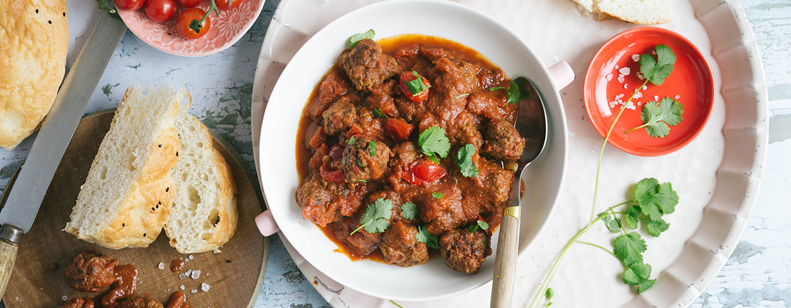

Hoe is de Spaghetti bolognese bevallen?
Nu gaan we een ingewikkelder recept proberen!.
Recept 2
Marokkaanse gehaktballetjes
Welke ingrediënten heb je nodig?
- 500 gram rundergehakt
- blik tomatenblokjes 400 gram
- 2 teentjes knoflook
- 1 grote ui
- 2 el milde paprikapoeder
- 2 tL verse koriander
- 100 gram feta
- 50 gram tomatenpuree
- 2 tl munt
- 2 oregano
- 1 ei
- 2 el panko
Stappenplan bereidingswijze
- Doe het gehakt in een kom
- Mix de kruiden, ui, knoflook en het ei erdoor heen
- Vorm met natte handen balletjes
- Vak de balletjes in de olie totdat ze bruin zijn
- Voeg de tomatenblokjes en tomatenpuree toe
- Laat gedurende 30 minuten op laag vuur doorsudderen
- Serveerd met rijst, couscous en feta